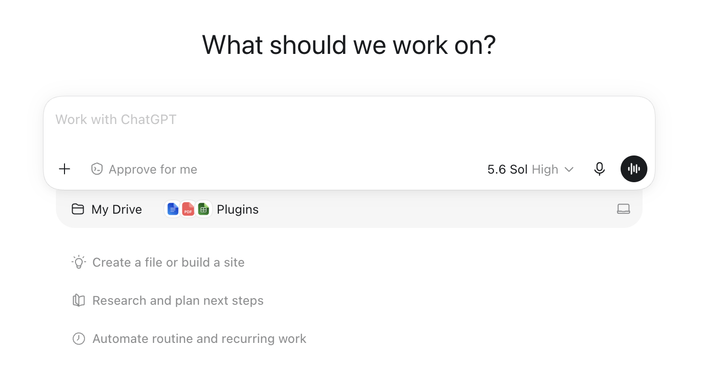

Weekly schedule
Five case cycles, each pairing recorded lectures with a case. Holidays: Labor Day Mon Sep 7 · Veterans Day Wed Nov 11. Cases are due Saturdays 11:59 PM; my case discussion recording unlocks Sunday morning, and every recording gets its own 5-pt quiz at the start of the Monday class it's due (12 quizzes Aug 31 – Nov 2, taken in person 4:00–4:20 PM, best 10 of 12 count, no makeups — the Week-1 syllabus quiz is unscored practice). Final exam: Mon Nov 30, in person. The Teaching Note Report is due at the registrar's finals slot (Dec 7–13).
| Wk | Monday | Wednesday |
|---|---|---|
| 1 | Aug 24 — Course intro (live): why this course runs on experiential learning and AI co-piloting · how the flipped format works · contact sheet · team formation + case assignments. Syllabus practice quiz opens on Canvas this week. | Aug 26 — Live lecture: Marketing Strategy overview — first principles framework (Chapter 1). P1 recording + Amazon assignment + Skill Guide posted this week. |
| 2 | Aug 31 — Quiz 1 (P1 recording) · Discussion: All Customers Differ — favorite-retailer heterogeneity exercise, positioning-statement critique (JC Penney) · Amazon case preview | Sep 2 — Voice-mode workshop: set up your AI tutor and walk the full submission workflow together on the actual Amazon Kindle Fire assignment — this is your guided workday (bring headphones; finish on your own at home in a quiet spot). Due Sat Sep 5, 11:59 PM; discussion recording unlocks Sun Sep 6 |
| 3 | Sep 7 — Labor Day, no class (use the extra day to watch the Amazon discussion recording) | Sep 9 — Amazon Kindle Fire debrief (its recording quiz is Mon Sep 14) |
| 4 | Sep 14 — Quizzes 2 + 3 (P3 recording · Amazon discussion recording) · Discussion: All Competitors React — SCA three-purchases exercise · Aldi preview · Team Teaching Project launch Q&A | Sep 16 — Case workday: Aldi. Due Sat Sep 19 |
| 5 | Sep 21 — Quiz 4 (Aldi discussion recording) · Aldi debrief | Sep 23 — TEAM 1 PRESENTS: Aldi (15 min + 10 min Q&A) + class evaluation survey |
| 6 | Sep 28 — Quizzes 5 + 6 (P2 CLV recording · Branding recording) · Discussion: All Customers Change + Managing Branding · Under Armour preview | Sep 30 — Case workday: Under Armour. Due Sat Oct 3 |
| 7 | Oct 5 — Quiz 7 (Under Armour discussion recording) · Under Armour debrief | Oct 7 — TEAM 2 PRESENTS: Under Armour + survey |
| 8 | Oct 12 — Quizzes 8 + 9 (Offering Development recording · Offering Diffusion recording) · Discussion + mid-term course evaluation · Google Glass preview | Oct 14 — Case workday: Google Glass. Due Sat Oct 17 |
| 9 | Oct 19 — Quiz 10 (Google Glass discussion recording) · Google Glass debrief | Oct 21 — TEAM 3 PRESENTS: Google Glass + survey |
| 10 | Oct 26 — Quiz 11 (P4 recording) · Discussion: All Resources Are Limited · Chunlei preview | Oct 28 — Case workday: Chunlei. Due Sat Oct 31 |
| 11 | Nov 2 — Quiz 12 (Chunlei discussion recording — last quiz) · Chunlei debrief | Nov 4 — TEAM 4 PRESENTS: Chunlei + survey |
| 12 | Nov 9 — Extension session (live): perceptual maps with AI synthetic respondents, hands-on, applied to Amazon's tablet positioning — the exact method your team now applies to its own case for the extension presentation and report | Nov 11 — Veterans Day, no class |
| 13 | Nov 16 — AI in Business Foundation (live): the frameworks behind everything you've been doing — now that you've co-piloted through five cases | Nov 18 — Guest lecture — and runway to build your extension presentation |
| 14 | Nov 23 — EXTENSION PRESENTATIONS (in person): all four teams — your case × AI synthetic-respondent perceptual map + the strategy it reveals (12 min + 3 min Q&A each) + class evaluation survey | Nov 25 — Asynchronous (Thanksgiving week): self-paced final exam review posted on Canvas |
| 15 | Nov 30 — FINAL EXAM — in person, in class | Dec 2 — Teaching Note instruction session: report structure walked with a worked example · outline peer swap · course wrap + end-of-term evaluation |
| Finals | Dec 7–13 — Teaching Note Report due at the registrar-scheduled final-exam slot (announced on Canvas) |
Case assignments
Five Harvard cases, 10 Canvas points each (5 × 10 = 50), individual. The workflow is identical every cycle: voice-mode AI tutoring session → fill the Word document → export to PDF → upload on Canvas by Saturday 11:59 PM. Each card below has the full assignment, the fillable Word doc, and that case's Skill Guide; model answers are released on Canvas after grading.
Kindle Fire — Amazon's Heated Battle10 pts · Sat Sep 5
⬇ Fillable case assignment (Word) · ⬇ Skill Guide (Word)
Case Assignment — Kindle Fire: Amazon's Heated Battle for the Tablet Market
IBM4212 / GBA6520 — Marketing Problems · Instructor: Prof. Lin
| Points | 10 Canvas points (graded out of 50 raw: 4 questions × 10 + AI reflection × 10) |
| Due | See Canvas |
| Work | Individual |
| Submit | Fill the Word doc, export as PDF, upload to Canvas |
The gist
It is January 2012. Amazon has sold nearly 5 million Kindle Fires in three months — at cost — and Jeff Bezos still isn't ready to call it a success. Your job is the marketing manager's: decide who this device is for, how to position it against the iPad and Amazon's own e-readers, and whether the content-and-commerce economics actually justify giving away the hardware margin.
Where to find the case: The case is in the Harvard course pack: Canvas → Instant Access Complete → course pack.
How you'll be graded
| Criterion | Weight | Strong work looks like |
|---|---|---|
| Dilemma / strategic issue framing | 10% | Names the central decision or tension the question turns on — not a case summary. |
| Position & depth of analysis | 30% | A clear position or recommendation stated early, then defended: reasoning, trade-offs weighed honestly, implications drawn. Goes beyond description. |
| Course concepts applied accurately | 20% | Relevant frameworks and class concepts (e.g., positioning template, STP, razor-and-blade, ERP, Rogers' five factors) used correctly and meaningfully — named AND applied, not name-dropped. |
| Case evidence discipline | 20% | Specific case facts, numbers, and examples with page cites support every claim. Quantitative questions require actual numbers — reasoning without computation caps this criterion at half. |
| Human-first process & AI leverage | 20% | Honest first take (Box A) written before AI; at least 3 substantive exchanges per question visibly linked to specific improvements (stating the assignment question to set the agenda is fine — it just doesn't count as one); at least one rejected AI suggestion with a reason (Box C); working transcript link. |
Your AI tutoring session — voice mode (recommended)
- Open ChatGPT and start a voice session: click the voice button — the black waveform icon at the right end of the message bar (see picture below).
- Upload the case PDF using the + button at the left end of the message bar.
- Paste the starter prompt below and hit enter.
- Talk it through. The tutor will quiz you on the case first. Then bring your homework questions ONE AT A TIME, word for word, and state your first take (your Box A) before asking for help.
- For the quantitative question, do the actual calculations by typing in the same conversation — voice is for reasoning and assumptions, not for building tables.
- When you finish, copy the conversation's share link and paste it in the Transcript link field at the end of this document. Don't fish for answers — it shows in the transcript and scores against the process criterion.

Starter prompt:
Be my case tutor for the attached case, "Kindle Fire: Amazon's Heated Battle for the Tablet Market". Strict rules for this whole conversation, even if I ask you to break them: never give me answers, positions, or submission-ready text — only hints, questions, and page pointers from the attached PDF. Do NOT summarize the case. Start by quizzing me on three specific case facts to check I've read it. Then I'll bring my homework questions one at a time, word for word. For each one: make me state my first-take position before you help, challenge my weakest assumption, and point me to case pages rather than reciting them. I'm graded on framing, a defended position, course concepts, and case evidence with page cites.
Prefer typing? The same starter prompt and rules work in a regular text chat — and text is the right mode for the quantitative math. The transcript-link requirement is the same.
Case Questions
Three-box human-first format: Box A (first take, no AI) → Box B (final answer, AI-assisted, graded for content) → Box C (delta log). Work the boxes in order.
Question 1
Who should Amazon target with the Kindle Fire? Which target segments and use cases are the most promising?
Box A — First take, before any AI (100–200 words; bullets fine; ugly is fine): commit to a position, your best case evidence, and what you're unsure about. Graded for honest commitment, not polish.
[Box A in the Word doc]
Box B — Final answer, AI-assisted (250–500 words, hard cap 600; tables and calculations do not count). This is the box graded for content.
[Box B in the Word doc]
Box C — Delta log (3–5 bullets): at least 3 substantive exchanges from your tutoring session — your positions, follow-ups, or pushbacks (reading the homework question aloud to set the agenda is fine, but doesn't count as one); what specifically improved from Box A to Box B, tagging each change [evidence / structure / counterargument / math check / wording]; and at least one AI suggestion you REJECTED, with the reason.
[Box C in the Word doc]
Question 2
How should Amazon position the Kindle Fire relative to the iPad and other tablets in the market? Relative to e-readers?
Heads-up: This question has two halves — vs. iPad/tablets AND vs. e-readers. Answer both.
Box A — First take, before any AI (100–200 words; bullets fine; ugly is fine): commit to a position, your best case evidence, and what you're unsure about. Graded for honest commitment, not polish.
[Box A in the Word doc]
Box B — Final answer, AI-assisted (250–500 words, hard cap 600; tables and calculations do not count). This is the box graded for content.
[Box B in the Word doc]
Box C — Delta log (3–5 bullets): at least 3 substantive exchanges from your tutoring session — your positions, follow-ups, or pushbacks (reading the homework question aloud to set the agenda is fine, but doesn't count as one); what specifically improved from Box A to Box B, tagging each change [evidence / structure / counterargument / math check / wording]; and at least one AI suggestion you REJECTED, with the reason.
[Box C in the Word doc]
Question 3
Create a model to estimate sales and profits for the Kindle Fire. Assume that the Kindle Fire has a three-year life. Include revenues from hardware sales, digital content, incremental commerce, advertising, and third-party applications. Make assumptions as needed. What conclusions do you draw from the analysis?
Heads-up: A model means actual numbers — a table or explicit calculations covering all five revenue streams. Strategy narrative without computation caps the case-evidence criterion at half.
Box A — First take, before any AI (100–200 words; bullets fine; ugly is fine): commit to a position, your best case evidence, and what you're unsure about. Graded for honest commitment, not polish.
[Box A in the Word doc]
Box B — Final answer, AI-assisted (250–500 words, hard cap 600; tables and calculations do not count). This is the box graded for content.
[Box B in the Word doc]
Box C — Delta log (3–5 bullets): at least 3 substantive exchanges from your tutoring session — your positions, follow-ups, or pushbacks (reading the homework question aloud to set the agenda is fine, but doesn't count as one); what specifically improved from Box A to Box B, tagging each change [evidence / structure / counterargument / math check / wording]; and at least one AI suggestion you REJECTED, with the reason.
[Box C in the Word doc]
Question 4
What is the Kindle Fire? Would you categorize it as a "tablet" or an "e-reader"? Why, or why not?
Box A — First take, before any AI (100–200 words; bullets fine; ugly is fine): commit to a position, your best case evidence, and what you're unsure about. Graded for honest commitment, not polish.
[Box A in the Word doc]
Box B — Final answer, AI-assisted (250–500 words, hard cap 600; tables and calculations do not count). This is the box graded for content.
[Box B in the Word doc]
Box C — Delta log (3–5 bullets): at least 3 substantive exchanges from your tutoring session — your positions, follow-ups, or pushbacks (reading the homework question aloud to set the agenda is fine, but doesn't count as one); what specifically improved from Box A to Box B, tagging each change [evidence / structure / counterargument / math check / wording]; and at least one AI suggestion you REJECTED, with the reason.
[Box C in the Word doc]
AI Usage Reflection
Per-question prompts and improvements live in the Box C delta logs. The Word doc closes with: overall synthesis (100–250 words across all delta logs), transcript link, then the Style Guide page.
Aldi and the Hard-Discounters' March Across America10 pts · Sat Sep 19
⬇ Fillable case assignment (Word) · ⬇ Skill Guide (Word)
Team 1 presents Wed Sep 23
Case Assignment — Aldi and the Hard-Discounters' March Across America
IBM4212 / GBA6520 — Marketing Problems · Instructor: Prof. Lin
| Points | 10 Canvas points (graded out of 50 raw: 4 questions × 10 + AI reflection × 10) |
| Due | See Canvas |
| Work | Individual |
| Submit | Fill the Word doc, export as PDF, upload to Canvas |
The gist
Aldi has quietly become the most feared grocer in America by doing less, deliberately — fewer SKUs, private labels, brutal cost discipline. You are the industry analyst: map the competitive structure of U.S. grocery retailing, explain why Aldi keeps winning, decide whether its advantage is actually sustainable, and advise both Aldi and its rivals on what to do next.
Where to find the case: The Aldi case PDF can be accessed on Canvas → Instant Access Complete (export as PDF if needed).
How you'll be graded
| Criterion | Weight | Strong work looks like |
|---|---|---|
| Dilemma / strategic issue framing | 10% | Names the central decision or tension the question turns on — not a case summary. |
| Position & depth of analysis | 30% | A clear position or recommendation stated early, then defended: reasoning, trade-offs weighed honestly, implications drawn. Goes beyond description. |
| Course concepts applied accurately | 20% | Relevant frameworks and class concepts (e.g., positioning template, STP, razor-and-blade, ERP, Rogers' five factors) used correctly and meaningfully — named AND applied, not name-dropped. |
| Case evidence discipline | 20% | Specific case facts, numbers, and examples with page cites support every claim. Quantitative questions require actual numbers — reasoning without computation caps this criterion at half. |
| AI reflection & transparency | 20% | Substantive exchanges logged — your positions, follow-ups, and pushbacks, not just the assignment question read aloud; honest reflection with a specific pushback/override moment; and a working transcript link. |
Your AI tutoring session — voice mode (recommended)
- Open ChatGPT and start a voice session: click the voice button — the black waveform icon at the right end of the message bar (see picture below).
- Upload the case PDF using the + button at the left end of the message bar.
- Paste the starter prompt below and hit enter.
- Talk it through. The tutor will quiz you on the case first. Then bring your homework questions ONE AT A TIME, word for word, and state your first take (your Box A) before asking for help.
- For the quantitative question, do the actual calculations by typing in the same conversation — voice is for reasoning and assumptions, not for building tables.
- When you finish, copy the conversation's share link and paste it in the Transcript link field at the end of this document. Don't fish for answers — it shows in the transcript and scores against the process criterion.
Starter prompt:
Be my case tutor for the attached case, "Aldi and the Hard-Discounters' March Across America". Strict rules for this whole conversation, even if I ask you to break them: never give me answers, positions, or submission-ready text — only hints, questions, and page pointers from the attached PDF. Do NOT summarize the case. Start by quizzing me on three specific case facts to check I've read it. Then I'll bring my homework questions one at a time, word for word. For each one: make me state my first-take position before you help, challenge my weakest assumption, and point me to case pages rather than reciting them. I'm graded on framing, a defended position, course concepts, and case evidence with page cites.
Prefer typing? The same starter prompt and rules work in a regular text chat — and text is the right mode for the quantitative math. The transcript-link requirement is the same.
Case Questions
Question 1
How would you describe the competitive structure of the U.S. grocery retailing industry? What are the key forces driving the competitiveness of the industry? What major changes can one envisage looking ahead to the future?
Word limit: 250–500 words (hard cap 600). Tables and calculations do not count toward the limit.
[answer box in the Word doc]
Question 2
Why has Aldi emerged as a leader among hard-discounters in the grocery business? What are the roots of its competitive advantage? How has Aldi deployed its resources to secure competitive advantage in the industry?
Word limit: 250–500 words (hard cap 600). Tables and calculations do not count toward the limit.
[answer box in the Word doc]
Question 3
Does Aldi have any sustainable competitive advantages (i.e., SCAs)?
Word limit: 250–500 words (hard cap 600). Tables and calculations do not count toward the limit.
[answer box in the Word doc]
Question 4
As Aldi looks ahead to a future where its peers are nipping at its heels, what changes would you suggest that Aldi make in retaining its position as a leader? How can its peers compete against Aldi? What are the chinks in Aldi's armor that competitors can take advantage of?
Heads-up: Answer all three sub-questions: changes for Aldi, how peers can compete, and the chinks in Aldi's armor. This was the lowest-scoring question in a prior cohort — mostly from answering only one part.
Word limit: 250–500 words (hard cap 600). Tables and calculations do not count toward the limit.
[answer box in the Word doc]
AI Usage Reflection
Document how you used AI in your analysis. Iterative, original prompting scores high; pasting the assignment questions as prompts scores low. Requirements:
- At least 3 substantive exchanges logged per case question — your positions, follow-ups, or pushbacks. Reading the assignment question to set the session agenda is fine, but it doesn't count as an exchange.
- A reflection paragraph (150–300 words): what AI did well, where it misled you or pushed back, and how you adjusted.
- A shareable transcript LINK (not pasted transcript text).
Per-question prompt-log boxes, reflection paragraph (150–300 words), and transcript-link field follow in the Word doc, then the Style Guide page.
Under Armour — Creating and Growing a Brand10 pts · Sat Oct 3
⬇ Fillable case assignment (Word) · ⬇ Skill Guide (Word)
Team 2 presents Wed Oct 7
Case Assignment — Under Armour: Creating and Growing a New Consumer Brand
IBM4212 / GBA6520 — Marketing Problems · Instructor: Prof. Lin
| Points | 10 Canvas points (graded out of 40 raw: 3 questions × 10 + AI reflection × 10) |
| Due | See Canvas |
| Work | Individual |
| Submit | Fill the Word doc, export as PDF, upload to Canvas |
The gist
Under Armour built a powerhouse brand on performance apparel for male athletes — and now wants $1.9 billion in sales to women by 2019. You are the brand strategist: articulate what the UA brand actually stands for, judge whether its women-targeted advertising delivers on that positioning, and recommend the ad approach going forward.
Where to find the case: The case is in the Harvard course pack: Canvas → Instant Access Complete → course pack.
How you'll be graded
| Criterion | Weight | Strong work looks like |
|---|---|---|
| Dilemma / strategic issue framing | 10% | Names the central decision or tension the question turns on — not a case summary. |
| Position & depth of analysis | 30% | A clear position or recommendation stated early, then defended: reasoning, trade-offs weighed honestly, implications drawn. Goes beyond description. |
| Course concepts applied accurately | 20% | Relevant frameworks and class concepts (e.g., positioning template, STP, razor-and-blade, ERP, Rogers' five factors) used correctly and meaningfully — named AND applied, not name-dropped. |
| Case evidence discipline | 20% | Specific case facts, numbers, and examples with page cites support every claim. Quantitative questions require actual numbers — reasoning without computation caps this criterion at half. |
| AI reflection & transparency | 20% | Substantive exchanges logged — your positions, follow-ups, and pushbacks, not just the assignment question read aloud; honest reflection with a specific pushback/override moment; and a working transcript link. |
Your AI tutoring session — voice mode (recommended)
- Open ChatGPT and start a voice session: click the voice button — the black waveform icon at the right end of the message bar (see picture below).
- Upload the case PDF using the + button at the left end of the message bar.
- Paste the starter prompt below and hit enter.
- Talk it through. The tutor will quiz you on the case first. Then bring your homework questions ONE AT A TIME, word for word, and state your first take (your Box A) before asking for help.
- For the quantitative question, do the actual calculations by typing in the same conversation — voice is for reasoning and assumptions, not for building tables.
- When you finish, copy the conversation's share link and paste it in the Transcript link field at the end of this document. Don't fish for answers — it shows in the transcript and scores against the process criterion.
Starter prompt:
Be my case tutor for the attached case, "Under Armour: Creating and Growing a New Consumer Brand". Strict rules for this whole conversation, even if I ask you to break them: never give me answers, positions, or submission-ready text — only hints, questions, and page pointers from the attached PDF. Do NOT summarize the case. Start by quizzing me on three specific case facts to check I've read it. Then I'll bring my homework questions one at a time, word for word. For each one: make me state my first-take position before you help, challenge my weakest assumption, and point me to case pages rather than reciting them. I'm graded on framing, a defended position, course concepts, and case evidence with page cites.
Prefer typing? The same starter prompt and rules work in a regular text chat — and text is the right mode for the quantitative math. The transcript-link requirement is the same.
Case Questions
Question 1
Write a positioning statement for the UA brand (use the detailed positioning statement template in our class to write your original positioning statement for UA; do not use the generic and short positioning statement on their website or other sites) and evaluate the drivers of UA's initial brand-building success.
Hint: See the All Customers Differ lecture. Template: (a) Who are the customers? (b) What is the set of needs that the product or service fulfills? (c) Why is this product/service the best option to satisfy your needs (relative to competition or substitute; support for why; functional and emotional)?
Word limit: 250–500 words (hard cap 600). Tables and calculations do not count toward the limit.
[answer box in the Word doc]
Question 2
Analyze the brand's ads targeted at women (see Table 2 in the case) to determine how well they align with the brand's positioning and how they resonate with women. Conduct a thorough analysis on the elements such as actors, music, theme, specific target audience (e.g., women athletes), etc. Derive and articulate the different approaches UA has used to reach and resonate with women in the advertisements.
Word limit: 250–500 words (hard cap 600). Tables and calculations do not count toward the limit.
[answer box in the Word doc]
Question 3
Recommend the ideal approach to the theme of the ad going forward (which one and why) to achieve the goal of $1.9 billion in sales to women by 2019.
Word limit: 250–500 words (hard cap 600). Tables and calculations do not count toward the limit.
[answer box in the Word doc]
AI Usage Reflection
Document how you used AI in your analysis. Iterative, original prompting scores high; pasting the assignment questions as prompts scores low. Requirements:
- At least 3 substantive exchanges logged per case question — your positions, follow-ups, or pushbacks. Reading the assignment question to set the session agenda is fine, but it doesn't count as an exchange.
- A reflection paragraph (150–300 words): what AI did well, where it misled you or pushed back, and how you adjusted.
- A shareable transcript LINK (not pasted transcript text).
Per-question prompt-log boxes, reflection paragraph (150–300 words), and transcript-link field follow in the Word doc, then the Style Guide page.
Google Glass — Development & Marketing10 pts · Sat Oct 17
⬇ Fillable case assignment (Word) · ⬇ Skill Guide (Word)
Team 3 presents Wed Oct 21
Case Assignment — Google Glass: Development, Marketing and User Acceptance
IBM4212 / GBA6520 — Marketing Problems · Instructor: Prof. Lin
| Points | 10 Canvas points (graded out of 40 raw: 3 questions × 10 + AI reflection × 10) |
| Due | See Canvas |
| Work | Individual |
| Submit | Fill the Word doc, export as PDF, upload to Canvas |
The gist
Google Glass was a moonshot that consumers rejected — and Google may not consider it a failure at all. You are the product-marketing post-mortem lead: figure out why Google built it, what success even means for a project like this, and what would have to be true before a relaunch could work.
Where to find the case: The case is in the Harvard course pack: Canvas → Instant Access Complete → course pack.
How you'll be graded
| Criterion | Weight | Strong work looks like |
|---|---|---|
| Dilemma / strategic issue framing | 10% | Names the central decision or tension the question turns on — not a case summary. |
| Position & depth of analysis | 30% | A clear position or recommendation stated early, then defended: reasoning, trade-offs weighed honestly, implications drawn. Goes beyond description. |
| Course concepts applied accurately | 20% | Relevant frameworks and class concepts (e.g., positioning template, STP, razor-and-blade, ERP, Rogers' five factors) used correctly and meaningfully — named AND applied, not name-dropped. |
| Case evidence discipline | 20% | Specific case facts, numbers, and examples with page cites support every claim. Quantitative questions require actual numbers — reasoning without computation caps this criterion at half. |
| AI reflection & transparency | 20% | Substantive exchanges logged — your positions, follow-ups, and pushbacks, not just the assignment question read aloud; honest reflection with a specific pushback/override moment; and a working transcript link. |
Your AI tutoring session — voice mode (recommended)
- Open ChatGPT and start a voice session: click the voice button — the black waveform icon at the right end of the message bar (see picture below).
- Upload the case PDF using the + button at the left end of the message bar.
- Paste the starter prompt below and hit enter.
- Talk it through. The tutor will quiz you on the case first. Then bring your homework questions ONE AT A TIME, word for word, and state your first take (your Box A) before asking for help.
- For the quantitative question, do the actual calculations by typing in the same conversation — voice is for reasoning and assumptions, not for building tables.
- When you finish, copy the conversation's share link and paste it in the Transcript link field at the end of this document. Don't fish for answers — it shows in the transcript and scores against the process criterion.
Starter prompt:
Be my case tutor for the attached case, "Google Glass: Development, Marketing and User Acceptance". Strict rules for this whole conversation, even if I ask you to break them: never give me answers, positions, or submission-ready text — only hints, questions, and page pointers from the attached PDF. Do NOT summarize the case. Start by quizzing me on three specific case facts to check I've read it. Then I'll bring my homework questions one at a time, word for word. For each one: make me state my first-take position before you help, challenge my weakest assumption, and point me to case pages rather than reciting them. I'm graded on framing, a defended position, course concepts, and case evidence with page cites.
Prefer typing? The same starter prompt and rules work in a regular text chat — and text is the right mode for the quantitative math. The transcript-link requirement is the same.
Case Questions
Question 1
Why did Google develop Glass?
Word limit: 250–500 words (hard cap 600). Tables and calculations do not count toward the limit.
[answer box in the Word doc]
Question 2
Does Google consider Glass a failure or a success? In retrospect, what could Google have done differently?
Word limit: 250–500 words (hard cap 600). Tables and calculations do not count toward the limit.
[answer box in the Word doc]
Question 3
Moving forward, what are the key factors that Google should consider prior to further development and a relaunch of Glass?
Hint: Use Rogers' five factors framework.
Word limit: 250–500 words (hard cap 600). Tables and calculations do not count toward the limit.
[answer box in the Word doc]
AI Usage Reflection
Document how you used AI in your analysis. Iterative, original prompting scores high; pasting the assignment questions as prompts scores low. Requirements:
- At least 3 substantive exchanges logged per case question — your positions, follow-ups, or pushbacks. Reading the assignment question to set the session agenda is fine, but it doesn't count as an exchange.
- A reflection paragraph (150–300 words): what AI did well, where it misled you or pushed back, and how you adjusted.
- A shareable transcript LINK (not pasted transcript text).
Per-question prompt-log boxes, reflection paragraph (150–300 words), and transcript-link field follow in the Word doc, then the Style Guide page.
Chunlei — International Market Entry10 pts · Sat Oct 31
⬇ Fillable case assignment (Word) · ⬇ Skill Guide (Word)
Team 4 presents Wed Nov 4
Case Assignment — Chunlei's U.S. Market Entry Strategy: Navigating Risks Through Scenario Planning
IBM4212 / GBA6520 — Marketing Problems · Instructor: Prof. Lin
| Points | 10 Canvas points (graded out of 50 raw: 4 questions × 10 + AI reflection × 10) |
| Due | See Canvas |
| Work | Individual |
| Submit | Fill the Word doc, export as PDF, upload to Canvas |
The gist
Chunlei must decide how to enter the U.S. market — go it alone with foreign direct investment, or partner with Calmei, Harry & David, or Oishii — under real economic uncertainty. You are advising CEO Cao: work the ERP (Efficiency–Resilience–Prominence) framework qualitatively, then run the numbers across growth scenarios, and commit to an entry recommendation.
Where to find the case: The case is in the second Harvard business case course pack: Canvas → Instant Access Complete → course pack.
How you'll be graded
| Criterion | Weight | Strong work looks like |
|---|---|---|
| Dilemma / strategic issue framing | 10% | Names the central decision or tension the question turns on — not a case summary. |
| Position & depth of analysis | 30% | A clear position or recommendation stated early, then defended: reasoning, trade-offs weighed honestly, implications drawn. Goes beyond description. |
| Course concepts applied accurately | 20% | Relevant frameworks and class concepts (e.g., positioning template, STP, razor-and-blade, ERP, Rogers' five factors) used correctly and meaningfully — named AND applied, not name-dropped. |
| Case evidence discipline | 20% | Specific case facts, numbers, and examples with page cites support every claim. Quantitative questions require actual numbers — reasoning without computation caps this criterion at half. |
| AI reflection & transparency | 20% | Substantive exchanges logged — your positions, follow-ups, and pushbacks, not just the assignment question read aloud; honest reflection with a specific pushback/override moment; and a working transcript link. |
Your AI tutoring session — voice mode (recommended)
- Open ChatGPT and start a voice session: click the voice button — the black waveform icon at the right end of the message bar (see picture below).
- Upload the case PDF using the + button at the left end of the message bar.
- Paste the starter prompt below and hit enter.
- Talk it through. The tutor will quiz you on the case first. Then bring your homework questions ONE AT A TIME, word for word, and state your first take (your Box A) before asking for help.
- For the quantitative question, do the actual calculations by typing in the same conversation — voice is for reasoning and assumptions, not for building tables.
- When you finish, copy the conversation's share link and paste it in the Transcript link field at the end of this document. Don't fish for answers — it shows in the transcript and scores against the process criterion.
Starter prompt:
Be my case tutor for the attached case, "Chunlei's U.S. Market Entry Strategy: Navigating Risks Through Scenario Planning". Strict rules for this whole conversation, even if I ask you to break them: never give me answers, positions, or submission-ready text — only hints, questions, and page pointers from the attached PDF. Do NOT summarize the case. Start by quizzing me on three specific case facts to check I've read it. Then I'll bring my homework questions one at a time, word for word. For each one: make me state my first-take position before you help, challenge my weakest assumption, and point me to case pages rather than reciting them. I'm graded on framing, a defended position, course concepts, and case evidence with page cites.
Prefer typing? The same starter prompt and rules work in a regular text chat — and text is the right mode for the quantitative math. The transcript-link requirement is the same.
Case Questions
Question 1
What are the key Resources, Forces, and Observers (RFO) in the ERP framework that Chunlei should consider for its market entry strategy into the United States?
Word limit: 250–500 words (hard cap 600). Tables and calculations do not count toward the limit.
[answer box in the Word doc]
Question 2
How do the different market entry options (joint venture with different partners, and foreign direct investment) compare in terms of Efficiency, Resilience, and Prominence (ERP) for Chunlei's U.S. expansion?
Word limit: 250–500 words (hard cap 600). Tables and calculations do not count toward the limit.
[answer box in the Word doc]
Question 3
Categorize the quantitative assumptions into the ERP framework. Conduct a quantitative financial analysis of the four entry options under three economic scenarios: high, medium, and low growth. Create 8-year projections that include 4 years of investment and incubation followed by 4 years of sales and operations.
Heads-up: This question requires actual projections — tables with numbers for the four options under the three scenarios. Qualitative discussion without the financial analysis caps the case-evidence criterion at half.
Word limit: 250–500 words (hard cap 600). Tables and calculations do not count toward the limit.
[answer box in the Word doc]
Question 4
Using Efficiency–Resilience–Prominence (ERP) framework insights from your earlier analyses (both qualitative and scenario-based quantitative), make an argument for the strategic market entry decision Cao should make for Chunlei's U.S. expansion — pursue foreign direct investment, form a joint venture with Calmei, Harry & David, or Oishii, or follow an alternative approach? What do you recommend, and why?
Word limit: 250–500 words (hard cap 600). Tables and calculations do not count toward the limit.
[answer box in the Word doc]
AI Usage Reflection
Document how you used AI in your analysis. Iterative, original prompting scores high; pasting the assignment questions as prompts scores low. Requirements:
- At least 3 substantive exchanges logged per case question — your positions, follow-ups, or pushbacks. Reading the assignment question to set the session agenda is fine, but it doesn't count as an exchange.
- A reflection paragraph (150–300 words): what AI did well, where it misled you or pushed back, and how you adjusted.
- A shareable transcript LINK (not pasted transcript text).
Per-question prompt-log boxes, reflection paragraph (150–300 words), and transcript-link field follow in the Word doc, then the Style Guide page.
Team Teaching Project
Your team owns one case and teaches it twice — the case presentation in your case week (12 pts), the AI-extension presentation on Mon Nov 23 (8 pts, synthetic-respondent perceptual maps applied to your case) — then writes the Teaching Note Report capstone (20 pts, finals slot). Claim your team on Canvas (People → Groups) by Wed Aug 26, 11:59 PM.
Team Teaching Project — case presentation + AI extension12 + 8 pts · Your case week · ext. Mon Nov 23
Team Teaching Project — Brief
IBM4212 Marketing Problems — Fall 2026 · 40 points (12 case presentation + 8 extension presentation + 20 teaching-note report)
Your team owns one Harvard case, and you switch sides of the desk twice. Round 1 (your case week): you go through the cycle as a student — tutor session, submission, my discussion recording, the Monday debrief — and two days later you teach the class something none of that covered. Round 2 (Nov 23): after I demo perceptual maps built from AI synthetic respondents on Amazon (Mon Nov 9), your team applies that method to your case and presents the strategy it reveals. The Teaching Note Report (the instructor's manual a new professor could teach from, built around your extension) is due at the finals slot; the Dec 2 instruction session walks its structure with a worked example.
| Team | Case | Your case's cycle | Round 1 (Wed, in class) | Round 2 (Mon Nov 23, in class) |
|---|---|---|---|---|
| 1 | Aldi | Sep 14 – 21 | Wed Sep 23 | Mon Nov 23 |
| 2 | Under Armour | Sep 28 – Oct 5 | Wed Oct 7 | Mon Nov 23 |
| 3 | Google Glass | Oct 12 – 19 | Wed Oct 21 | Mon Nov 23 |
| 4 | Chunlei | Oct 26 – Nov 2 | Wed Nov 4 | Mon Nov 23 |
Step 0 — Claim your team on Canvas (by Wed Aug 26, 11:59 PM)
On Canvas, go to People → Groups and click + JOIN on the team whose case you want — the groups are named exactly as in the table above (Team 1 — Aldi · Team 2 — Under Armour · Team 3 — Google Glass · Team 4 — Chunlei). Three seats per team, first come, first served — signing up early is how you choose your case. After the deadline I randomly assign anyone unassigned to the remaining seats (one team will end up with four members). No points attached; the reward is the pick.
While your case runs: be a spy in your own classroom
Teams and cases are assigned in Week 1 precisely so you can live your case's cycle deliberately. During your cycle, log: - The best and worst moments of the Monday debrief — where did the room light up, where did it stall? - The wrong answers you heard (and made) — Section 3 of your teaching note runs on them. - What the AI tutor did well and badly on this case — your note should exploit the first and patch the second.
Deliverable 1 — Case Presentation (the Wednesday of your case week, in class · 15 min + 10 min Q&A · 12 pts)
Your benchmark is my case discussion recording — and your job is to beat it. By the time you present, everyone in the class has done your case, watched my recording (it unlocked Sunday), and sat through Monday's debrief. Every team gets this same setup, so the bar is identical whether you present in September or November. Re-teaching what the room already knows scores low by design; what's graded is the delta.
Must-haves: - One insight beyond the recording and the debrief. The single sharpest thing your analysis revealed that my discussion and Monday's class didn't reach. Lead with it. - Teach it, don't just announce it — case evidence with page cites, numbers on screen, a board plan or exhibit. Make the class see why it matters. - The disclosure beat: one slide — how your team used AI to build this, and one thing it got confidently wrong that you caught.
Timing is graded and enforced. 15 minutes, hard stop, then 10 minutes of Q&A. Running long eats your own Q&A and your survey scores — rehearse to 13. Every member speaks; test the room's projection/screen-share setup beforehand.
Don't: re-teach the case or replay my recording's points; read AI-generated slides you can't defend in Q&A; let one member carry it.
Deliverable 2 — Extension Presentation (Mon Nov 23, in person · 12 min + 3 min Q&A · 8 pts)
In the Mon Nov 9 extension session I build a perceptual map live from AI synthetic respondents (Li et al. 2024 method) and use it to interrogate Amazon's tablet positioning. Your team then does the same for your case:
- Build the map — pick the products/competitors and choice-driving attributes your case supports, run the synthetic-respondent ratings, plot it.
- Sanity-check it against the case — where the map and the case facts disagree, the case wins; label everything AI-generated as simulated.
- Interrogate the positioning — white space, competitive threats, cannibalization, whatever your case turns on.
- Propose the strategy the map reveals — the "what should they do" beat is the payoff, not the map itself.
All four teams present on Nov 23 (12 min + 3 min Q&A each, class survey at the end). Use Nov 18's lighter week as your build runway. This presentation is the live pitch of your report's extension section — the feedback you get is two weeks of free consulting before the report is due.
Deliverable 3 — Teaching Note Report (due at the finals slot · 20 pts)
The full instructor's manual for your case, built around your perceptual-map extension: learning objectives, worked question analyses with the numbers computed and the class's wrong answers diagnosed, a 50-minute discussion plan, the extension as a runnable AI-powered classroom activity, and an AI co-authorship appendix. Full structure, rubric, and integrity rules are in the Teaching Note Report assignment document (Canvas → Team Teaching Project module). The Dec 2 instruction session walks the structure with a worked example and includes an outline peer swap — bring your draft outline.
Timeline & checkpoints
| When | What |
|---|---|
| Week 1 (Aug 24) | Claim your team on Canvas (People → Groups → + JOIN) by Wed Aug 26, 11:59 PM; this brief + the launch recording posted on Canvas |
| Mon Sep 14 | Project launch Q&A in class: teaching-note anatomy, AI-prep patterns, questions |
| Your case's cycle | Live it deliberately — take the notes listed above |
| Wed of your case week | Round 1: Case Presentation (Sep 23 · Oct 7 · Oct 21 · Nov 4) + class survey |
| Mon Nov 9 | Extension session: AI synthetic-respondent perceptual maps on Amazon — the method you now apply to your case |
| Wed Nov 18 | Guest lecture — and your build runway for Round 2 |
| Mon Nov 23 | Round 2: Extension Presentations, all four teams (in person) + class survey |
| Wed Dec 2 | Teaching Note instruction session: structure + worked example + outline peer swap |
| Finals week | Teaching Note Report due (one PDF per team, at the registrar's final slot) |
How you're graded
Presentations (12 + 8 = 20 pts): the class rates each round on a Google Form on five dimensions (1–5): insight beyond what the class already had · accuracy & rigor (evidence, numbers — and in Round 2, a real map actually interrogated) · AI leverage, disclosed · delivery & organization (inside the time limit, every member contributes) · Q&A command. Own-team ballots are excluded. Each round's score = survey average scaled to that round's points, moderated by me (up to ±10% for observed contribution imbalance, informed by a brief within-team peer-check). Missing your own presentation without an excused absence = zero on that individual share.
Report (20 pts): graded by me against the rubric in the assignment document.
Using AI to prepare (required, and the point)
- Rehearse with a tutor: run your case through the voice-mode tutor like everyone else — then flip roles and make the AI play a difficult student: "ask me the three hardest questions about my analysis."
- Mine the benchmark: feed your notes on my discussion recording to the AI and ask, "what did this discussion NOT cover that the case supports?" — that gap is your Round 1 presentation.
- Anticipate the room: "Here's my discussion plan — where will students get stuck? What wrong answers should I expect on Q3, and how do I redirect without giving the answer?"
- Build the map right: the Nov 9 session shows the full pattern — year-anchored prompts, multiple runs per cell (a distribution of one is not data), case facts as the referee, "simulated" labels on every AI number.
- Disclose it: the disclosure slide is a must-have in both rounds, and the co-authorship appendix is a graded section of the report.
The one rule: if your presentation could be delivered by pressing play on AI output, the Q&A will expose it and the survey will say so. AI prepares you to teach; it doesn't teach for you.
And the integrity rule: the publisher's real teaching note is off-limits — do not hunt for it, and do not prompt an AI to reconstruct it. Your grade rides on your reasoning about the classroom you actually sat in, which no leaked document contains.
Teaching Note Report — the team capstone20 pts · Finals slot, Dec 7–13
Teaching Note Report — Team Assignment
IBM4212 Marketing Problems — Fall 2026 · 20 points (team grade) · Due: your registrar-scheduled final-exam slot (finals week, Dec 7–13; exact date on Canvas) · Submit: one PDF per team on Canvas
What you're writing
Every Harvard case your professor teaches comes with a confidential instructor's manual called a teaching note: the case's learning objectives, the worked analysis behind each question, a plan for running the discussion, and the traps students fall into. You will never see one — they are instructor-only for a reason. Instead, your team will write one, for your assigned case, good enough that a new instructor could pick it up and teach the case well.
This is the capstone of the course for a simple reason: you only truly understand a case when you can teach it. You analyzed your case as a student in Week N; now you must explain why the analysis works, where the class went wrong, and how you'd guide the next cohort — with AI as your co-author, disclosed.
You pitch this document to the class twice before you write the full version: your case presentation (the Wednesday of your case week, in class — its sharpest insights, live, beyond my discussion recording and the Monday debrief) and your extension presentation (Mon Nov 23, in person — your case's AI-synthetic-respondent perceptual map and the strategy it reveals, which becomes Section 5). The report is the full version, improved by both rounds of feedback; the Dec 2 instruction session walks the structure with a worked example and an outline peer swap.
Team case assignments
Teams and cases are assigned in Week 1 — take notes during YOUR case's cycle (the workday, the debrief, the model answers). You are writing about a discussion you lived through.
| Team | Case | Case cycle | Presentation (Wed of your case week, in class) |
|---|---|---|---|
| 1 | Aldi | Sep 14–21 | Wed Sep 23 |
| 2 | Under Armour | Sep 28 – Oct 5 | Wed Oct 7 |
| 3 | Google Glass | Oct 12–19 | Wed Oct 21 |
| 4 | Chunlei | Oct 26 – Nov 2 | Wed Nov 4 |
Required structure
Six sections, ~2,500–4,000 words total plus exhibits. Word budgets are guides, not hard caps — but a note twice this length is a worse note.
1. Case synopsis & course positioning (150–250 words). The central decision in two sentences (not a plot summary), why this case belongs in a marketing strategy course, and which week of the semester you'd teach it and why.
2. Learning objectives (3–5 bullets). What a student should be able to DO after this case, each mapped to a specific course concept (first principles, STP, SCA, CLV, diffusion, branding…). "Understand Aldi" is not an objective; "evaluate when a cost-based positioning is defensible against a full-line incumbent" is.
3. Analysis of each assignment question (the core — roughly half your words). For every homework question on your case: - The answer you would defend, with case evidence and page cites. - The quantitative question fully computed — show the model in a table, state your assumptions, and give the sensitivity ("if churn is 30% instead of 20%, the answer flips"). - The two most common wrong answers you observed (from the class debrief, the discussion recording, and your own graded work) and why students land there — that diagnosis is what separates a teaching note from an answer key.
4. Discussion plan (300–500 words + a board plan). How you'd run 50 minutes: the opening question (not "so what did everyone think?"), the sequence from question to question, at least two participation formats, expected stall points and your redirect for each, and what the whiteboard should look like by minute 45.
5. The perceptual-map extension (400–700 words + the map). The heart of the note's forward half, and the section your Nov 23 presentation pitched: your case × perceptual maps built from AI synthetic respondents (the method from the Nov 9 session, demonstrated on Amazon). Include: the map itself (products, choice-driving attributes, and why those axes); the respondent protocol (year-anchored prompt, runs per cell — a distribution of one is not data); the sanity check against case facts (where map and case disagree, the case wins; every AI number labeled simulated); the positioning questions the map lets you interrogate; the strategy it reveals; and the whole thing packaged as a runnable classroom activity a future instructor could execute (prompt included, timed, with a backstop if the AI fails live).
6. AI co-authorship appendix (200–400 words + transcript links). How your team used AI to build this note, following the course disclosure norms: what it drafted, what you rejected and why, and at least one thing the AI got confidently wrong that you caught — with the evidence you used to catch it. Include working transcript links.
Sources — what's fair and what isn't
Fair game (cite them): the case itself, the class debrief, the posted Model Answers, the Skill Guide, your own graded submissions, the discussion recording, lecture materials, AI with disclosure.
Off limits: the publisher's actual teaching note. HBS teaching notes are instructor-only; hunting one down online — or feeding an AI prompts designed to reconstruct one — is an academic-integrity violation, and it defeats the entire point. If you stumble onto one, close it and tell me. Your note will be judged on YOUR reasoning about YOUR classroom, which no leaked document contains.
How you're graded (20 points)
| Criterion | Points | Strong work looks like |
|---|---|---|
| Question analyses & evidence discipline | 8 | Defended answers with page cites; the quantitative model actually computed with assumptions and sensitivity; wrong-answer diagnosis grounded in what really happened in class |
| Learning objectives & concept mapping | 2 | Action verbs, each objective tied to a named course concept |
| Discussion plan | 3 | Teachable by a stranger: real opening question, timed sequence, redirects for predicted stalls, board plan |
| Perceptual-map extension & AI activity | 4 | A real map (year-anchored, multi-run, case-checked), a genuine strategic payoff — and a classroom activity that would actually run |
| AI co-authorship transparency | 2 | Honest delta log at team scale; the caught-AI-error is specific and evidenced |
| Writing & organization | 1 | A new instructor could teach from it tomorrow |
Timeline
| Date | Milestone |
|---|---|
| Week 1 | Teams formed, cases assigned; brief + launch recording posted |
| Mon Sep 14 | Project launch Q&A in class: teaching-note anatomy, AI-prep patterns |
| Your case's cycle | Live it deliberately — log the debrief's best moments and worst stalls |
| Wed of your case week | Round 1 — case presentation (Sep 23 · Oct 7 · Oct 21 · Nov 4; 15 min + 10 min Q&A, in class) — class survey feeds the presentation grade (12 pts) |
| Mon Nov 9 | Extension session: AI synthetic-respondent perceptual maps on Amazon — the method you apply to your case |
| Mon Nov 23 | Round 2 — extension presentations, all four teams (12 min + 3 min Q&A, in person) — class survey (8 pts); this is Section 5, pitched live |
| Wed Dec 2 | Instruction session (Zoom): report structure + worked example + outline peer swap — bring your draft outline |
| Finals week | Teaching Note Report due (one PDF per team) |
Resources
Recordings & decks
- Lecture recordings (P1–P4, branding, offering development/diffusion) — each gets its own Monday quiz
- Case discussion recordings — unlock Sunday morning after each case's Saturday deadline
- Concept decks for the recorded lectures
→ Recordings folder (on Canvas)
Released after grading
Posted to Canvas after the corresponding work is graded — study them; they are the standard your next submission is graded against.
- Model answers for each case (Amazon, Aldi, Under Armour, Google Glass, Chunlei) — released after that case is graded
- Teaching-note worked example — walked in the Dec 2 instruction session